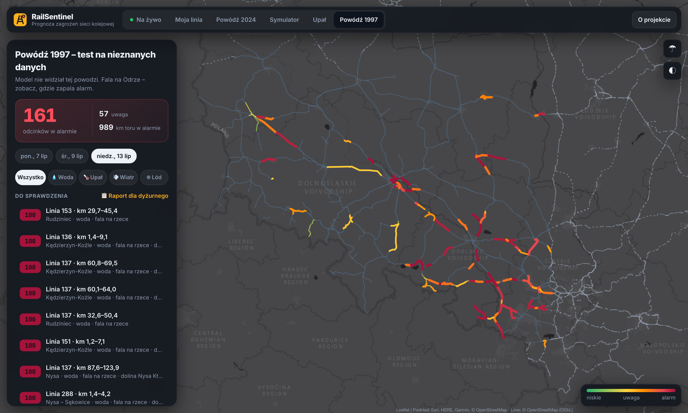

<!doctype html>
<html lang="pl">
<head>
<meta charset="utf-8">
<title>RailSentinel – sceny filmu</title>
<link href="https://fonts.googleapis.com/css2?family=Inter:wght@400;600;700;800;900&display=swap" rel="stylesheet">
<style>
  :root { --bg:#070a0f; --ink:#eef2f7; --muted:#93a4b8; --accent:#ffb020; --red:#ff4d55; --blue:#4c8dff; --green:#2bd17e; }
  * { box-sizing: border-box; margin: 0; }
  html, body { width: 1920px; height: 1080px; overflow: hidden; background: var(--bg); color: var(--ink); font-family: Inter, sans-serif; }
  .bg { position: absolute; inset: 0; background:
        radial-gradient(1200px 700px at 15% 20%, rgba(76,141,255,.18), transparent 60%),
        radial-gradient(1000px 700px at 85% 80%, rgba(255,176,32,.14), transparent 60%), var(--bg);
        animation: drift 18s ease-in-out infinite alternate; }
  @keyframes drift { to { filter: hue-rotate(-12deg); transform: scale(1.06); } }
  .rails { position: absolute; inset: 0; opacity: .14; }
  .rails path { stroke: #fff; stroke-width: 2; fill: none; stroke-dasharray: 18 14; animation: run 6s linear infinite; }
  @keyframes run { to { stroke-dashoffset: -320; } }
  .scene { position: absolute; inset: 0; padding: 120px 140px; display: flex; flex-direction: column; justify-content: center; }
  .kicker { color: var(--accent); font-weight: 800; letter-spacing: .18em; text-transform: uppercase; font-size: 26px; margin-bottom: 26px; }
  h1 { font-size: 118px; line-height: 1.0; letter-spacing: -.04em; font-weight: 900; }
  h2 { font-size: 78px; line-height: 1.05; letter-spacing: -.03em; font-weight: 900; }
  p.lead { font-size: 38px; color: var(--muted); margin-top: 30px; max-width: 1400px; line-height: 1.35; }
  .accent { color: var(--accent); } .red { color: var(--red); } .blue { color: var(--blue); }
  .in { opacity: 0; transform: translateY(40px); animation: in .9s cubic-bezier(.2,.8,.2,1) forwards; }
  @keyframes in { to { opacity: 1; transform: none; } }
  .d1 { animation-delay: .25s } .d2 { animation-delay: .7s } .d3 { animation-delay: 1.2s } .d4 { animation-delay: 1.8s } .d5 { animation-delay: 2.5s } .d6 { animation-delay: 3.3s } .d7 { animation-delay: 4.2s } .d8 { animation-delay: 5.2s }
  .logo { display: flex; align-items: center; gap: 34px; }
  .logo svg { width: 150px; height: 150px; filter: drop-shadow(0 20px 60px rgba(255,176,32,.35)); }
  .stats { display: grid; grid-template-columns: repeat(3, 1fr); gap: 34px; margin-top: 60px; }
  .stat { background: rgba(255,255,255,.05); border: 1px solid rgba(255,255,255,.12); border-radius: 28px; padding: 36px; backdrop-filter: blur(6px); }
  .stat b { display: block; font-size: 96px; font-weight: 900; letter-spacing: -.03em; line-height: 1; }
  .stat span { color: var(--muted); font-size: 28px; line-height: 1.3; display: block; margin-top: 14px; }
  .year { font-size: 240px; font-weight: 900; letter-spacing: -.06em; line-height: .9; background: linear-gradient(90deg, #fff, #93a4b8); -webkit-background-clip: text; color: transparent; }
  .shot { position: absolute; right: 110px; top: 150px; width: 820px; border-radius: 26px; overflow: hidden; border: 1px solid rgba(255,255,255,.15); box-shadow: 0 40px 120px rgba(0,0,0,.6); }
  .shot img { width: 100%; display: block; animation: kb 14s ease-out forwards; transform-origin: 60% 50%; }
  @keyframes kb { from { transform: scale(1.0); } to { transform: scale(1.18); } }
  .left { max-width: 860px; }
  .pills { display: flex; flex-wrap: wrap; gap: 18px; margin-top: 46px; }
  .pill { font-size: 32px; font-weight: 700; padding: 16px 28px; border-radius: 999px; background: rgba(255,255,255,.07); border: 1px solid rgba(255,255,255,.15); }
  .flow { display: grid; grid-template-columns: 1fr 90px 1fr 90px 1fr; align-items: center; margin-top: 60px; }
  .box { background: rgba(255,255,255,.05); border: 1px solid rgba(255,255,255,.14); border-radius: 26px; padding: 34px; min-height: 300px; }
  .box h3 { font-size: 40px; margin-bottom: 14px; }
  .box p { font-size: 27px; color: var(--muted); line-height: 1.35; }
  .arrow { font-size: 70px; text-align: center; color: var(--accent); }
  .bars { display: flex; gap: 60px; align-items: flex-end; height: 470px; margin-top: 50px; }
  .bar { width: 300px; border-radius: 22px 22px 0 0; position: relative; height: 0; animation: grow 1.6s cubic-bezier(.2,.8,.2,1) forwards; }
  .bar b { position: absolute; top: -90px; left: 0; right: 0; text-align: center; font-size: 76px; font-weight: 900; }
  .bar span { position: absolute; bottom: -70px; left: -20px; right: -20px; text-align: center; font-size: 28px; color: var(--muted); }
  @keyframes grow { to { height: var(--h); } }
  .cards { display: grid; grid-template-columns: repeat(4, 1fr); gap: 28px; margin-top: 60px; }
  .card { background: rgba(255,255,255,.05); border: 1px solid rgba(255,255,255,.14); border-radius: 26px; padding: 34px; min-height: 380px; }
  .card .ic { font-size: 70px; }
  .card h3 { font-size: 36px; margin: 18px 0 12px; }
  .card p { font-size: 26px; color: var(--muted); line-height: 1.35; }
  .url { font-size: 70px; font-weight: 800; margin-top: 50px; color: var(--accent); }
  .qr { position: absolute; right: 150px; bottom: 140px; background: #fff; padding: 22px; border-radius: 22px; }
  .qr img { width: 260px; height: 260px; display: block; }
  .strike { position: relative; display: inline-block; }
  .strike::after { content: ""; position: absolute; left: -6px; right: -6px; top: 55%; height: 8px; background: var(--red); transform-origin: left; transform: scaleX(0); animation: st .6s 2.2s forwards; }
  @keyframes st { to { transform: scaleX(1); } }
  .counter { font-variant-numeric: tabular-nums; }
</style>
</head>
<body>
<div class="bg"></div>
<svg class="rails" viewBox="0 0 1920 1080" preserveAspectRatio="none"><path d="M-50 900 C 500 760, 900 980, 1980 700"/><path d="M-50 940 C 500 800, 900 1020, 1980 740"/><path d="M-50 180 C 600 300, 1200 60, 1980 240"/></svg>
<div id="root"></div>
<script>
const P = new URLSearchParams(location.search);
const S = P.get("scene");
const V = JSON.parse(decodeURIComponent(P.get("v") || "%7B%7D"));
const LOGO = `<svg viewBox="0 0 32 32"><rect x="1" y="1" width="30" height="30" rx="8" fill="#ffb020"/><path d="M9 25 L14 7 M23 25 L18 7 M10.5 20h11 M12 14.5h8" stroke="#0b0f14" stroke-width="2.4" stroke-linecap="round"/><circle cx="24" cy="8" r="3.2" fill="#ff4d4f" stroke="#0b0f14" stroke-width="1.5"/></svg>`;
const T = {
  intro: `<div class="scene"><div class="logo in d1">${LOGO}<h1>RailSentinel</h1></div>
    <p class="lead in d3">Pomaga zdecydować, który odcinek toru sprawdzić najpierw – <span class="accent">zanim pogoda go uszkodzi.</span></p>
    <div class="pills in d5"><span class="pill">🌧 podmycie</span><span class="pill">🌊 fala na rzece</span><span class="pill">🔥 wyboczenie</span><span class="pill">🌬 wichura</span><span class="pill">🧊 oblodzenie</span></div></div>`,
  y1997: `<div class="scene"><div class="left"><div class="kicker in d1">Lipiec 1997 · powódź tysiąclecia</div><div class="year in d2">1997</div>
    <p class="lead in d3">Fala na Odrze niszczy mosty kolejowe:<br><b class="accent">Kędzierzyn-Koźle · Krapkowice · Brzeg Dolny</b></p>
    <p class="lead in d5" style="font-size:30px">Część zniszczeń ogranicza ruch na magistralach do dziś.</p></div>
    <div class="shot in d2"></div></div>`,
  y2024: `<div class="scene"><div class="kicker in d1">Wrzesień 2024 · ulewa w Sudetach</div><h2 class="in d2">Woda zabiera tory, nasypy i mosty.</h2>
    <div class="stats"><div class="stat in d3"><b class="red">880 mln zł</b><span>wstępne straty infrastruktury PKP PLK</span></div>
    <div class="stat in d4"><b>300 m</b><span>nasypu z torem zabrane na linii Kłodzko – Kudowa-Zdrój</span></div>
    <div class="stat in d5"><b class="accent">3 dni</b><span>wcześniej prognozy ECMWF pokazywały tę ulewę</span></div></div></div>`,
  problem: `<div class="scene"><div class="kicker in d1">Problem</div><h2 class="in d2">Ostrzeżenia są dla <span class="strike">powiatów</span>.<br>Pociągi jeżdżą po <span class="accent">kilometrach toru.</span></h2>
    <p class="lead in d4">Nikt nie mówi dyżurnemu: „jutro wieczorem zagrożony jest <b>ten</b> odcinek linii 276 pod Kłodzkiem”.</p></div>`,
  how: `<div class="scene"><div class="kicker in d1">Jak to działa</div><h2 class="in d2">Dwa modele uczenia maszynowego<br>+ fizyka + otwarte dane.</h2>
    <div class="flow"><div class="box in d3"><h3>🌧 Model A · ulewa</h3><p>Opad, nasycenie gruntu, położenie toru w dolinie, rzeki, mosty i nasypy → ryzyko podmycia.</p></div>
    <div class="arrow in d4">+</div><div class="box in d4"><h3>🌊 Model B · rzeki</h3><p>Prognoza stanów ${V.stations || "800"} wodowskazów IMGW na 3 dni. Sam znajduje „zwiastuny” fali w górnym biegu.</p></div>
    <div class="arrow in d5">→</div><div class="box in d6"><h3>🚆 Odcinek toru</h3><p>Ryzyko na 72 h, wyjaśnienie „dlaczego” i zalecane działanie dla dyżurnego.</p></div></div></div>`,
  river: `<div class="scene"><div class="kicker in d1">Nowość · prognoza fali (ML)</div><h2 class="in d2">Wykryte przekroczenia stanu rzeki<br>z wyprzedzeniem 2 dni – powódź 2024</h2>
    <p class="lead in d2" style="font-size:28px;margin-top:10px">Test historyczny przy znanym opadzie (górna granica)</p>
    <div class="bars"><div class="bar in d3" style="--h:${(V.pod_p || 45) * 4}px;background:#5b6676"><b>${V.pod_p || 45}%</b><span>„rzeka się nie zmieni”</span></div>
    <div class="bar in d4" style="--h:${(V.pod_s || 66) * 4}px;background:linear-gradient(#4c8dff,#2563eb)"><b class="blue">${V.pod_s || 66}%</b><span>RailSentinel (ML)</span></div>
    <div style="font-size:120px;font-weight:900;color:var(--green)" class="in d6">+${V.gain || 47}%</div></div></div>`,
  whom: `<div class="scene"><div class="kicker in d1">Dla kogo</div><h2 class="in d2">Rozwiązuje problemy ludzi, którzy pilnują torów.</h2>
    <div class="cards"><div class="card in d3"><div class="ic">🧑‍✈️</div><h3>Dyżurny ruchu</h3><p>Rano wie, gdzie ograniczyć prędkość i zlecić obchód.</p></div>
    <div class="card in d4"><div class="ic">🛠️</div><h3>Zakład linii kolejowych</h3><p>Brygady i sprzęt na miejscu przed ulewą, nie po niej.</p></div>
    <div class="card in d5"><div class="ic">🛰️</div><h3>Sztab kryzysowy</h3><p>Cała Polska na 72 h i ćwiczenia w symulatorze.</p></div>
    <div class="card in d6"><div class="ic">📈</div><h3>Inwestycje</h3><p>Gdzie przepust czy umocnienie skarpy dadzą najwięcej.</p></div></div></div>`,
  voices: `<div class="scene"><div class="kicker in d1">Głos z terenu</div><h2 class="in d2">Zapytałem ludzi,<br>którzy <span class="accent">pilnują torów</span> na co dzień.</h2>
    <p class="lead in d3">Toromistrz i dyżurny ruchu oglądają RailSentinel – nagrania bez reżyserii i bez skrótów myśli.</p></div>`,
  outro: `<div class="scene"><div class="logo in d1">${LOGO}<h1>RailSentinel</h1></div>
    <p class="lead in d2">Pomaga zdecydować, <span class="accent">gdzie najpierw zweryfikować zagrożenie.</span></p>
    <div class="url in d3">railsentinel.pl</div>
    <p class="lead in d4" style="font-size:28px">Maciej Onisiewicz · Politechnika Wrocławska · Konkurs PKP PLK „Kolej na bezpieczeństwo”</p>
    <div class="qr in d4"></div></div>`,
};
document.getElementById("root").innerHTML = T[S] || "";
</script>
</body>
</html>
